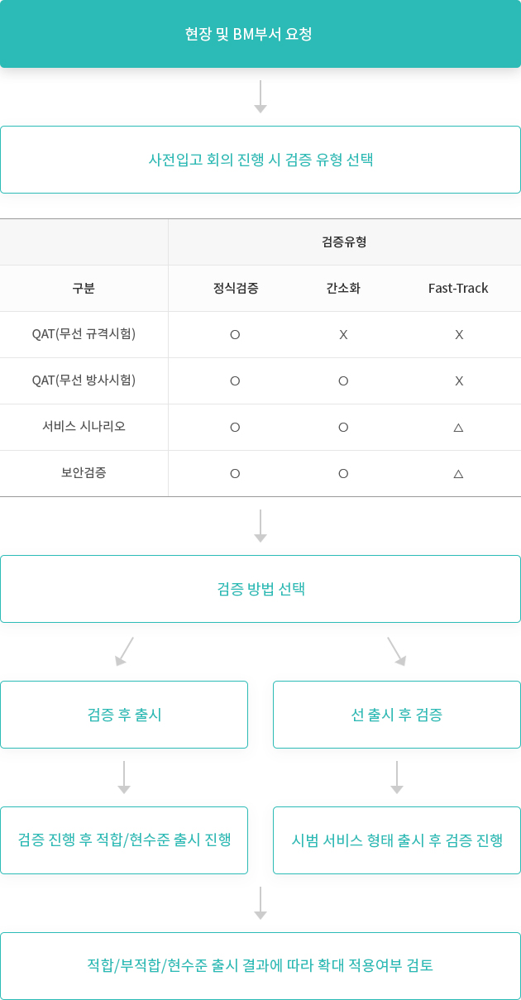
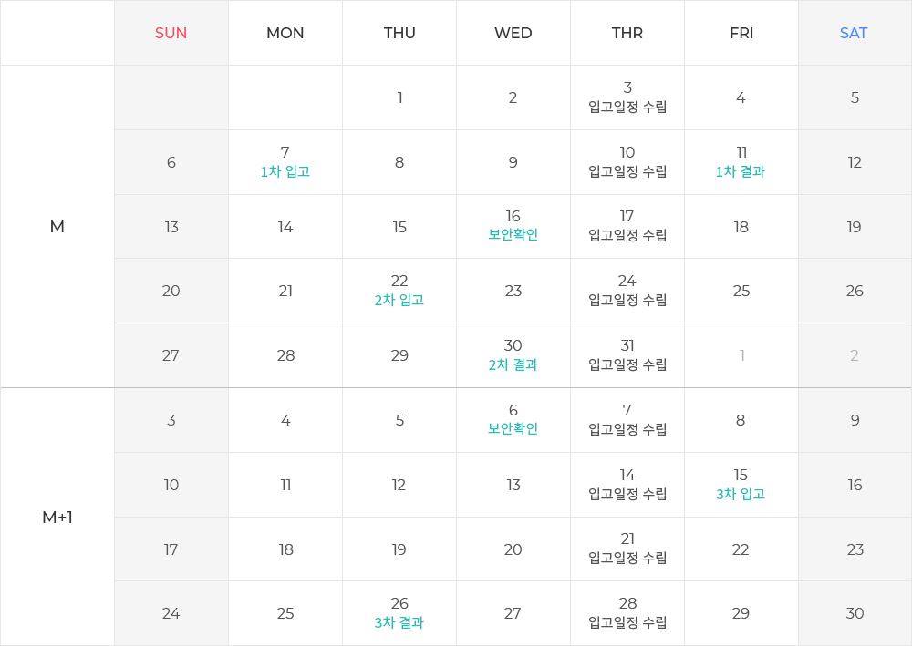

- 1) QAT 대상 단말 중 신규 규격 항목을 반영하는 단말
- 2) 1개 제조사에 대한 규격 이해도 향상을 위한 검증 수행 후 그 외 제조사는 Q&A 미팅을 통한 규격설명
Home
Support
검증 지원
검증 가이드
검증 지원
3. 업무 프로세스
3.1 SAT(Specification Assurance Test)
3.1.1 SAT 대상 단말
3.2 QAT(Quality Assurance Test) 및 기능검증
3.2.1 검증 유형 절차

3.2.2 검증 유형 대상
- 1) 정식 검증 대상 : 미인증 모듈 및 원칩단말
- 2) 간소화 대상 : kt인증 모듈을 사용 단말(kt무선단말기술팀 또는 NIPA 시험 성적서로 대체 가능)
- 3) Fast-Track 대상 : 외산 단말
- ① Fast-Track 필수 조건
- 기 인증 받은 국내 통신 모듈 미사용으로 검증환경 지원이 어려운 외산 단말 대상
- 시험환경 미지원으로 사용성 위주의 최소 항목 시험만 진행
- 결함 항목 / 미 시험 항목 /이슈사항에 대한 확인서 및 망 영향성 검토 후 현장/제조사의 대응방안 필요
- ② 시험범위 및 고려사항
- 사용성 위주의 확인 가능한 항목
- 미시험 항목에 대한 제조사 및 현장 대응방안 고려 필요
- ① Fast-Track 필수 조건
3.2.3 검증 방법
(1) 검증 후 출시
- 1) 현수준 출시 대상 : 검증 결과 부적합 단말 중 긴급 출시가 필요한 단말
- ① 사유 : 긴급한 영업적 사유가 있는 경우에 한하여 현장 및 BM부서 책임하에 확인서 작성 후 요청하는 경우 출시하는 프로세스(단, 외산단말의 경우 검증부서 추가 확인)
- ② 처리절차
- A. 현장영업부서 및 BM부서에서 요청
- B. 부적합 사항에 대한 제조사 확인서 및 필수문서 제출
- C. 제출문서 검토 후 현수준출시
(2) 선 출시 후검증
- 1) 선출시 후검증 필수 조건
- ① 긴급한 영업적 사유가 있을 경우
- ② 초도 시범서비스 형태로 운영되는 경우
- ③ 시범서비스 종료 이내 검증완료가능한 경우
- ④ 검증 후 펌웨어 업데이트 대응이 가능할 경우
- 2) 선출시 후검증 절차 : 긴급한 영업적 사유로 검증 유예 하고 출시하고자 하는 경우 유관부서 협의 후 출시 관련 검토
- 3) 필수 제출 문서
- ① 선출시 후검증 확인서
- ② 입고문서 및 망 영향성 검토 결과
- ③ KC인증서
3.2.4 [MR] 약식 기능검증 수행
- [MR] 약식 기능검증 수행, Minor 수정사항인 경우 협의 후 서류 대체
- 모듈 버전이 QAT 미 인증 버전인 경우 단말 QAT 진행 필요
3.3 검증 일정 (예시)

- 1) 매주 목요일까지 시료 단말 및 관련문서 제출 완료하고, 차주 입고일정 수립
- 2) QA/기능검증 결과는 검증일정 및 상황에 따라 일정이 달라질 수 있음
- 3) QAT/기능검증 보완 입고는 기능검증의 오류 내용을 포함하여야 함
- 4) QAT는 5~6차 진행으로 최고 6개월이 소요되는 경우도 발생함